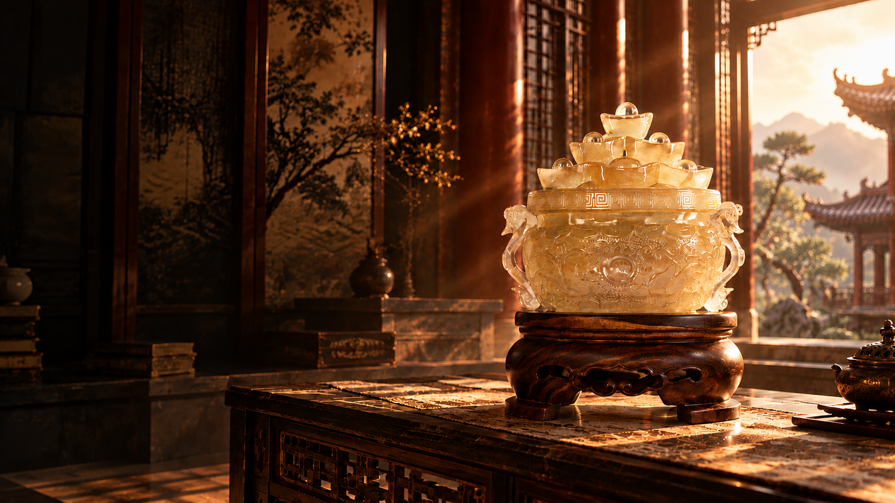
THE CRAFTSMANSHIP
Excellence is never a matter of chance. It begins with a discerning eye for rarity, craftsmanship, and exceptional quality.
EXPLORE OUR COLLECTIONS01 — HERITAGE
During the prosperous reign of Emperor Qian Long, Imperial Feng Shui embodied a guiding philosophy — to harmonize people, place, and purpose, a wisdom that continues to inspire our pursuit of balance and abundance in life today.
山管人丁，水管财
"Mountains nurture people and descendants;
water governs wealth."
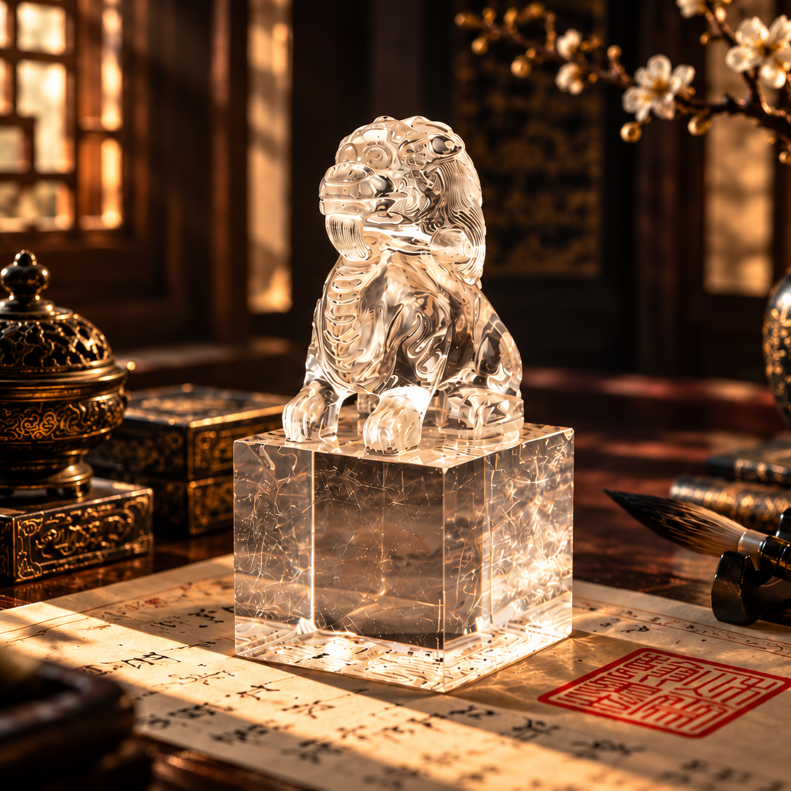
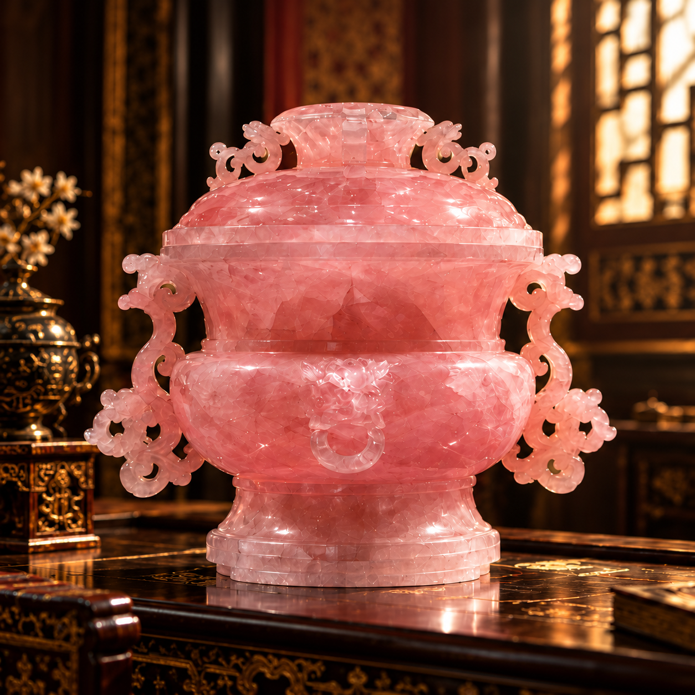
02 — TRADITION
Rooted in Imperial Feng Shui, Anggara Treasures selects exceptional crystals for their clarity and vivid colour. Personally envisioned by Master Rezza, each creation is masterfully crafted and traditionally blessed at an auspicious time, honouring the Water Star philosophy. Three enduring principles define our standard: clarity, colour, and craftsmanship.
"From nature's rarity to
an enduring imperial tradition."
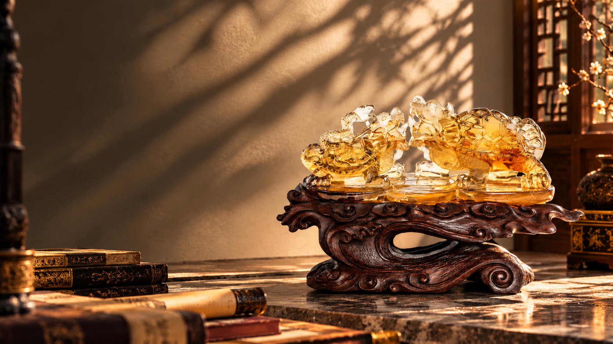
03 — THE STANDARD
Every crystal from Anggara Treasures is unique and one-of-a-kind. Master Rezza works with mine owners from Brazil to select raw crystal blocks that complies with strict GIA certification standards — widely known as the three Cs, namely the Clarity, Colour and Cut.
"Excellence is never accidental.
It is a matter of selection.."
04 — CLARITY
Formed over time beneath the earth, every crystal bears traces of its natural origin. At Anggara Treasures, clarity is selected with exceptional discernment.
CLARITY SCALE
under 10× magnification
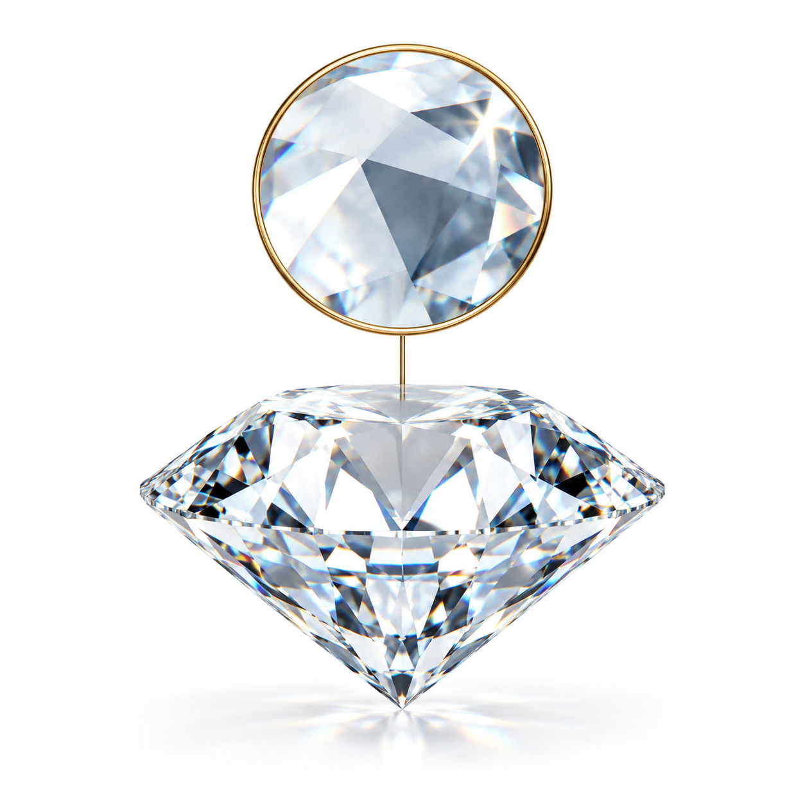
IF
INTERNALLY FLAWLESS
No inclusions visible
under 10× magnification.
VVS1
VERY, VERY SLIGHTLY INCLUDED
Tiny inclusions visible
under 10× magnification.
VVS2
VERY, VERY SLIGHTLY INCLUDED
Tiny inclusions visible
under 10× magnification.
01 — INTERNALLY FLAWLESS
INTERNALLY FLAWLESS
At the pinnacle of clarity, Internally Flawless crystals reveal no internal inclusions under 10× magnification. A rare expression of natural purity, reserved for creations where exceptional transparency is paramount.
IF
INTERNALLY FLAWLESS
No inclusions visible under 10× magnification.
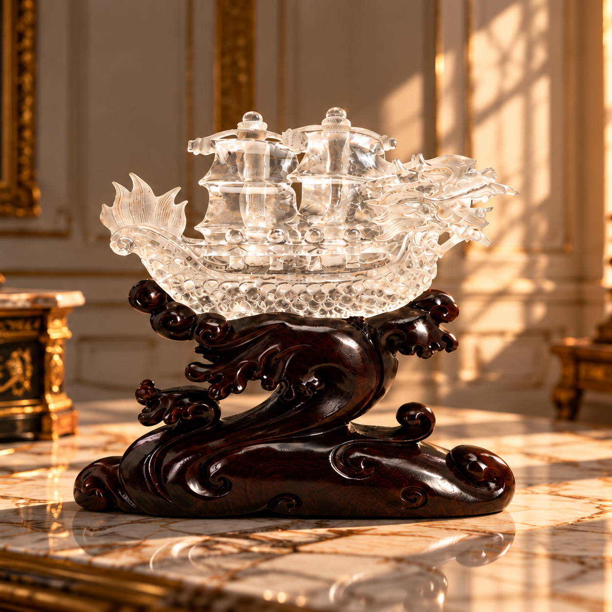
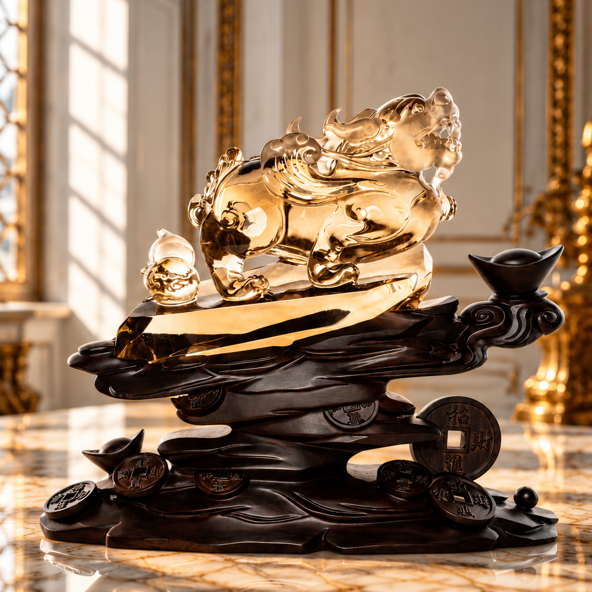
02 — VERY, VERY SLIGHTLY INCLUDED
VERY, VERY SLIGHTLY INCLUDED
Exhibiting exceptional transparency, VVS1 crystals contain minute inclusions that are extremely difficult to detect, reflecting a rare level of clarity and the exacting standards of Anggara Treasures.
VVS1
VERY, VERY SLIGHTLY INCLUDED
Minute inclusions, visible only under 10× magnification.
03 — VERY, VERY SLIGHTLY INCLUDED
VERY, VERY SLIGHTLY INCLUDED
VVS2 crystals retain exceptional clarity, with minute inclusions that remain difficult to identify under 10× magnification, reflecting a rare level of purity and an enduring commitment to excellence.
VVS2
VERY, VERY SLIGHTLY INCLUDED
Tiny inclusions, visible only under 10× magnification.
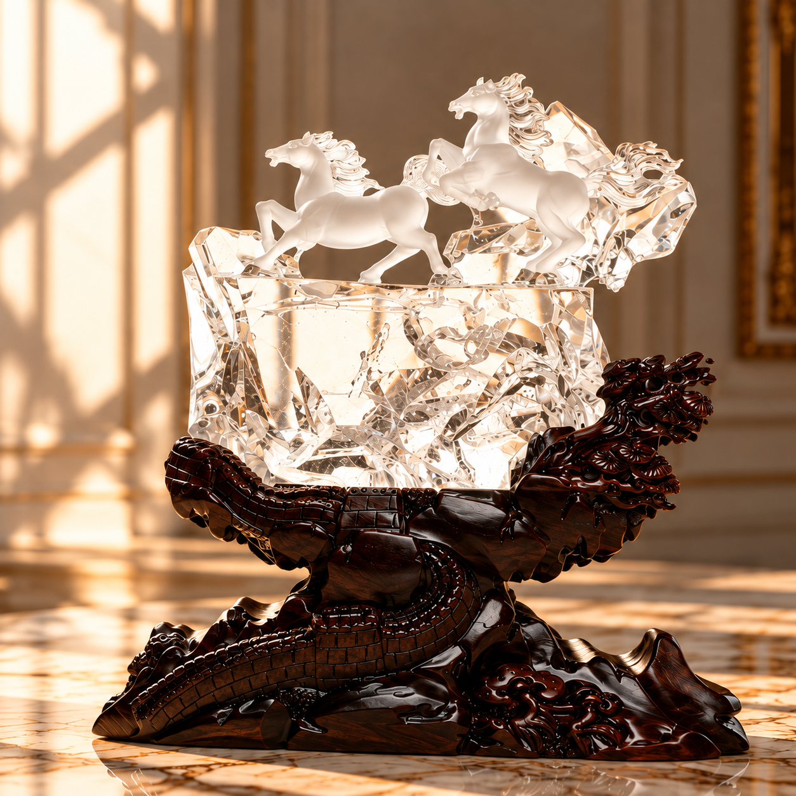
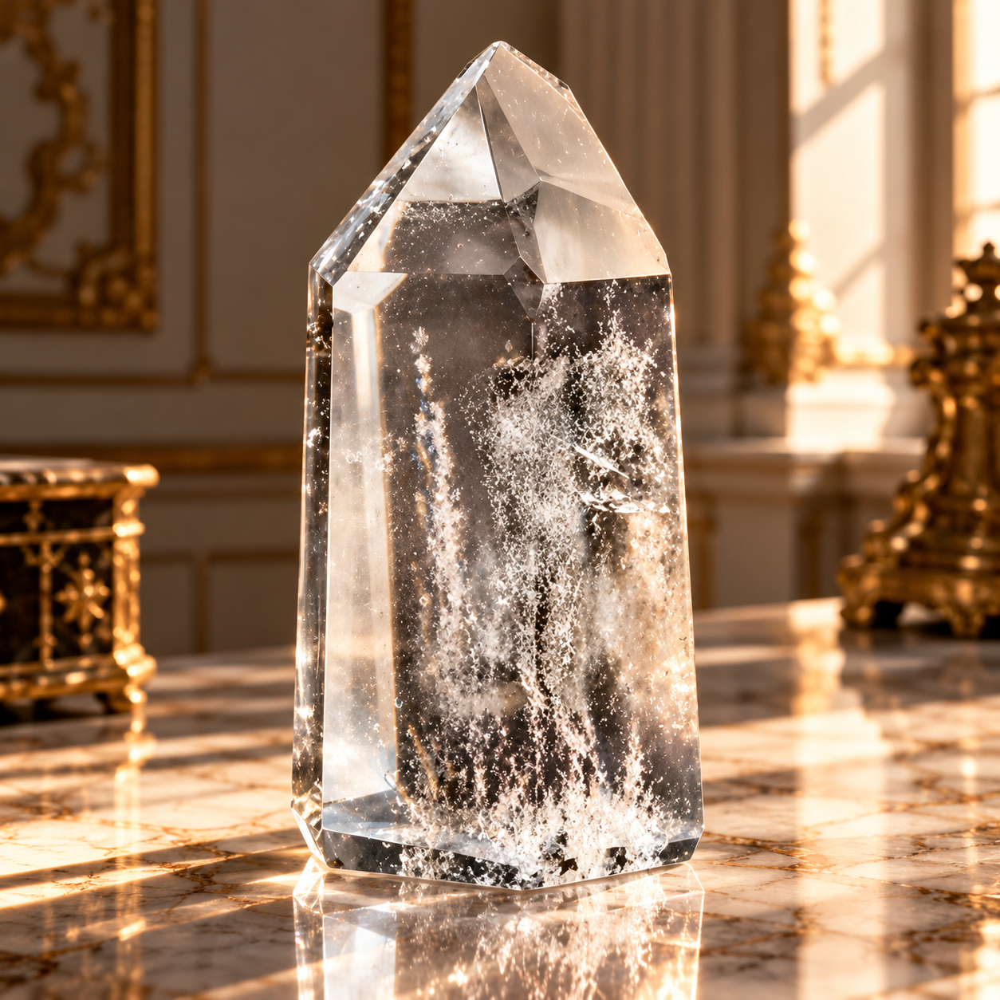
05 — EXAMPLES OF INFERIOR CRYSTALS
RECOGNISING IMPERFECTION
Inferior crystals are characterised by impurities, cracks, cloudiness, and inconsistent craftsmanship, which can diminish their visual distinction.
INFERIOR CRYSTALS
VISIBLE IMPURITIES
Impurities and cracks visible under 10× magnification.
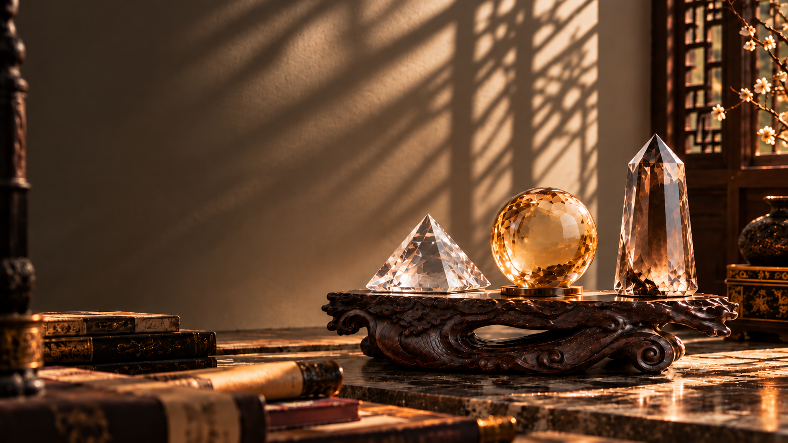
04 — THE COLOUR
From the purity of Clear Quartz to the golden brilliance of Citrine and the understated depth of Smoky Quartz, Anggara Treasures selects only exceptional, naturally formed specimens, distinguished by their colour, clarity, and rarity.
Nature creates the extraordinary.
We select the exceptional.
AUTHENTICITY · GRADING · RARITY
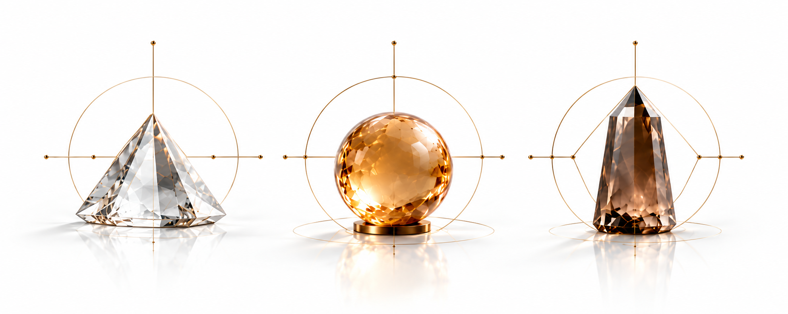
01 – ALL-NATURAL
Anggara Treasures-grade Crystals are all-natural, never artificially treated to remove any blemish or alter the colour.
02 – GIA COLOUR STANDARD
Every crystal is assigned a colour grade by the GIA in a controlled viewing environment, free from surrounding colour and light influence.
03 – GIA COLOUR SCALE
There are six categories on the GIA chart, ranging from D (absolutely colourless) to Z (light yellow or brown).
04 – NATURALLY-COLOURED CRYSTALS
Naturally occurring colours such as red, orange, yellow, green, blue or pink are rare – only 1 in 10,000 crystals – and graded on a separate GIA scale. Intensely vivid crystals are extremely rare and valuable.
01 — CLEAR QUARTZ
Naturally colourless and transparent, clear quartz is rare in its purest form. At Anggara Treasures, we select only exceptional crystals, crafted to inspire clarity, balance, and enduring prosperity.
"Clarity illuminates
the path to lasting prosperity."
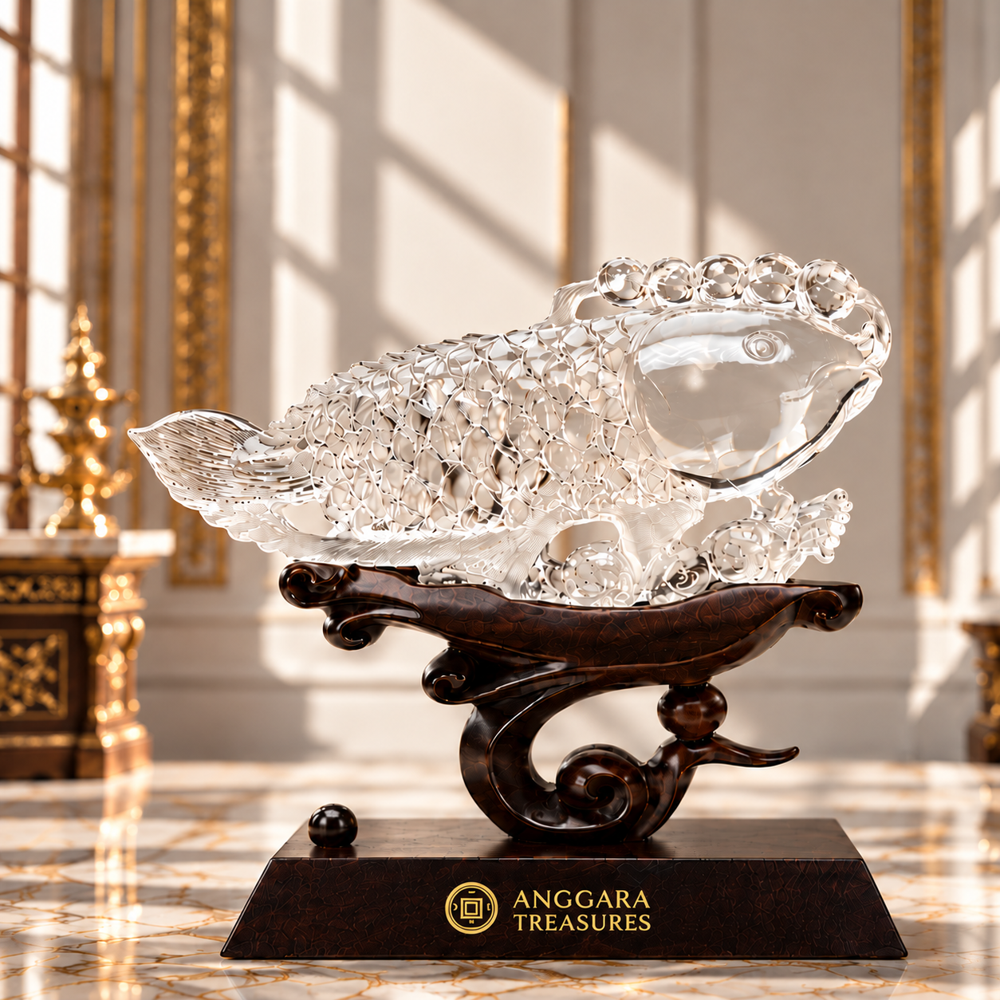
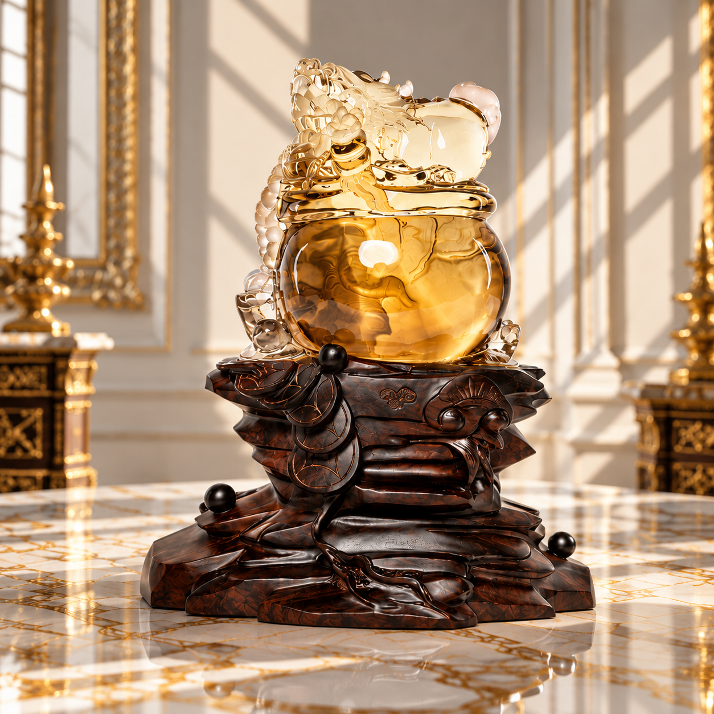
02 — CITRINE
Natural citrine is one of the rarest crystals in the world, as 97% of citrine in the market are heat-treated amethysts or smoky quartz. Anggara Treasures offers only natural citrine, deriving its brilliant fancy yellow colour from natural ferric minerals present in quartz.
"True radiance
attracts lasting abundance."
03 — SMOKY QUARTZ
Naturally shaped by the earth, smoky quartz reveals an exquisite spectrum of translucent brown hues. At Anggara Treasures, we select only exceptional natural crystals, from Internally Flawless to VVS2 quality, distinguished by their remarkable clarity, captivating depth, and timeless elegance.
"True refinement lies
in the beauty of natural perfection."
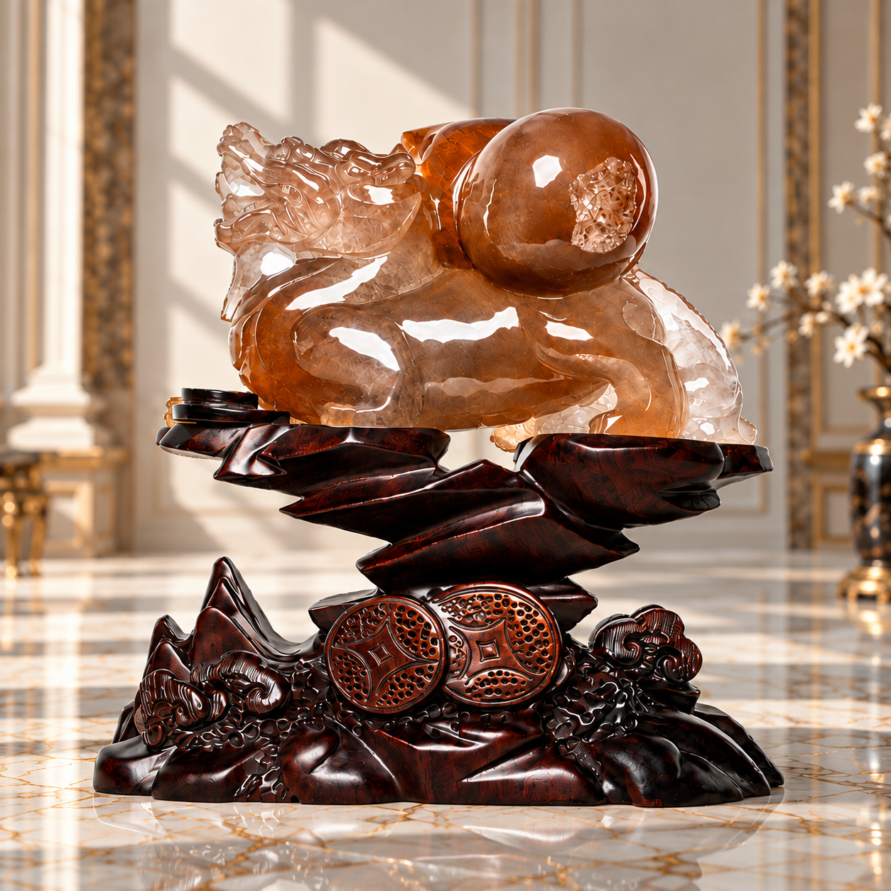
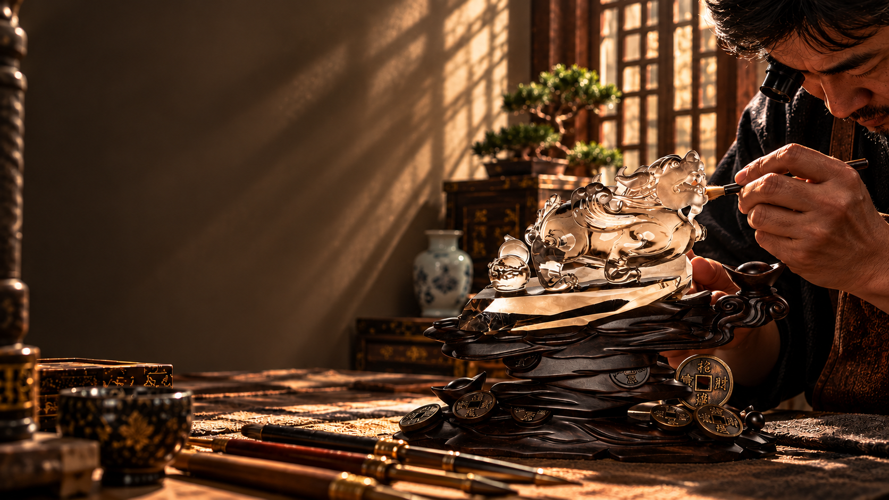
01 — CRAFTSMANSHIP
Each Anggara Treasures creation features carefully selected natural crystals and fine jadeite, guided by Imperial Feng Shui principles and crafted with exceptional artistry.
"A timeless expression of nature's beauty
and the artistry of human hands."
THE ART BEHIND THE
IMPERIAL DESIGN · ARTISANAL MASTERY · PRECISION OF LIGHT
IMPERIAL DESIGN
Guided by Imperial Wisdom
Each creation begins with sketches guided by Imperial Feng Shui, giving every form its meaning and purpose.
IMPERIAL LINEAGE
A Heritage of Knowledge
Rooted in Emperor Qianlong's Imperial Feng Shui heritage, generations of wisdom passed directly to Master Rezza inspire every creation.
ARTISANAL MASTERY
Perfected by Human Hands
Traditional hand-carving and polishing techniques reveal the unique character and detail of each crystal.
THE ART OF LIGHT
The Precision of Brilliance
Every contour is carefully shaped to enhance the crystal's natural transparency, reflection, and refraction, revealing its distinctive brilliance.
THE CRAFTSMANSHIP JOURNEY
Five meticulous stages, where the natural character of each crystal is respected, refined, and brought to its fullest expression
01 — MATERIAL SELECTION
Every creation begins with the careful selection of exceptional crystals and jadeite, distinguished by their clarity, colour and natural character.
"Excellence begins long
before the first cut."
02 — UNDERSTANDING THE MATERIAL
Before carving begins, each crystal is carefully studied for its natural structure, colour, and distinctive characteristics. These qualities guide the design, allowing the material's inherent beauty to shape the creation.
"True craftsmanship
begins with understanding."
03 — HAND CARVING
Through meticulous hand carving, the crystal gradually takes form. Traditional artistry and precise detailing reveal the character of the material, one considered contour at a time.
"Mastery is revealed
in every detail."
04 — MANUAL POLISHING
Through meticulous hand polishing, the crystal gradually reveals its natural clarity and brilliance. Using fine abrasives and traditional techniques, every contour is refined to a smooth and luminous finish, honouring the unique character of the stone.
"True beauty is found
in the final touch."
05 — FINAL REFINEMENT
Each piece undergoes a final inspection by our master craftsmen. The surface is carefully refined, the details are perfected, and the crystal's natural brilliance is brought to its fullest expression — ensuring a timeless masterpiece.
"True beauty is found
in the final touch."
THE CRAFTSMANSHIP
From the careful selection of exceptional materials to the final refinement, each creation is shaped by skilled hands, patience, and precision — honouring the natural character of every crystal and preserving the knowledge of tradition.
EXPLORE OUR COLLECTIONS